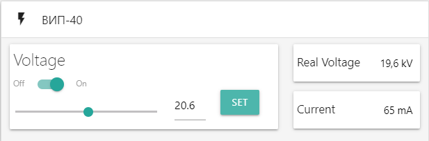

Содержание
Driver installation
Connecting
ВИП-40 (card)
Pulse generator (card)
Chart options
Status-bar
USB-UART converter
Data exchange protocol
Pulse generator
High voltage source
Driver installation
It's necessary to install driver for CH340G to device will been found with your computer
But if even any reason there isn't the driver on your PC, it can be installed using "INSTALL DRIVER" below
If there isn't the driver "USB2.0-Serial" will be shown in "Other devices"

If there is the driver "USB-SERIAL CH340" will be shown in "Ports (COM &LPT)"

Connecting
To begin data exchange between PC and device it's necessary to press "CONNECT" button in status-bar


Dafault:
- Voltage ВИП-40: 0 V
- State ВИП-40: OFF
- Frequency PG: 1 Hz
- State PG: OFF
ВИП-40
In the "ВИП-40" card you can set voltage value. Using switch "Off-On" you can change state between OFF/ON. Cells «Real Voltage» and «Current» show values coming from MC_1. Default high voltage source state is "OFF", voltage value: 0 V.
Pulse generator (PG)
Chart options
Статус-бар

- No mistakes
- Short resist circuit
- No water
- Overcurrent
- Short circuit in box
- Lock
USB-UART converter
Data exchange protocol
Pulse generator
Request PC to MC
| № byte | Purpose | Value |
|---|---|---|
| 0 | Address MC | 100 |
| 1 | ON/OFF | 1/0 |
| 2 | Divider | ',' |
| 3, 4, 5 | Frequency | 0..200 |
| 6 | Divider | ',' |
| 7, 8, 9 | Checksum | 0..201 |
Response MC
| № byte | Purpose | Value |
|---|---|---|
| 0 | Address MC | 100 |
| 1, 2, 3 | Vacuum gauge | 0..999 |
| 4 | Divider | ',' |
| 5, 6, 7 | Checksum | 0..201 |
High voltage source
Request PC to MC
| № byte | Purpose | Value |
|---|---|---|
| 0 | Address MC | 100 |
| 1 | Device number | 1/0 |
| 2 | Divider | ',' |
| 3 | ON/OFF | 0/1 |
| 4 | Divider | ',' |
| 5, 6, 7 | Voltage | 0..400 |
| 8 | Divider | ',' |
| 9, 10, 11 | Checksum | 0..402 |
Response MC
| № byte | Purpose | Value |
|---|---|---|
| 0 | Address MC | 100 |
| 1 | Device number | 1 |
| 2 | Divider | ',' |
| 3 | ON/OFF | 0/1 |
| 4 | Divider | ',' |
| 5, 6, 7 | Voltage | 0..400 |
| 8 | Divider | ',' |
| 9, 10, 11 | Current | 0..125 |
| 12 | Divider | ',' |
| 13 | State | 0..5 |
| 14 | Divider | ',' |
| 15, 16, 17 | Checksum | ',' |